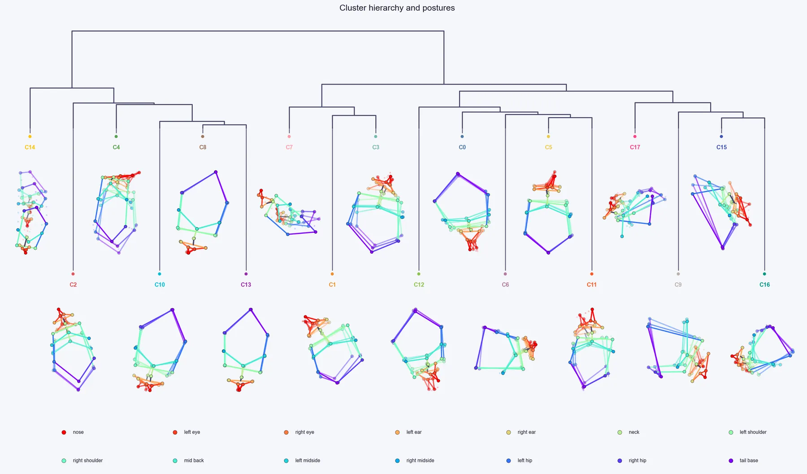

Launch: click Step 4 (the Video Annotation card), or run cube_video_explorer.py.

Workflow#
- Open the Step 3 output folder. The explorer loads the example clips of each cluster.
- For each cluster, play several clips and assign a behaviour name (for example "Rearing", "Grooming", "Locomotion"). Use Previous and Next (or the arrow keys) to move between clusters.
- You can give several clusters the same name when they show the same behaviour at different speeds or body angles; they are then analysed together as one behaviour.
- Save the session. Your names appear in the Analyser. Clusters you did not name are shown as "Cluster N".
Keyboard shortcuts: arrow keys move between clusters, Space replays the clip, N creates a new behaviour group, I ignores the current cluster, 1 to 9 assign the cluster to behaviour group 1 to 9, Ctrl+S saves, Ctrl+Z undoes the last assignment.
Tips#
- Watch several clips per cluster before naming it; behaviour within a cluster can vary.
- The reserved Turned Away cluster has example clips like any other. It appears as an unnamed "Cluster N" (N is your highest real cluster id plus one). A glance at a clip confirms it is footage of the animal turned away; naming it "Turned Away" keeps it labelled consistently.
- The Video Explorer has a second tab, Guided labelling, for when you want clusters to follow behaviours you define yourself (see Guided labelling).